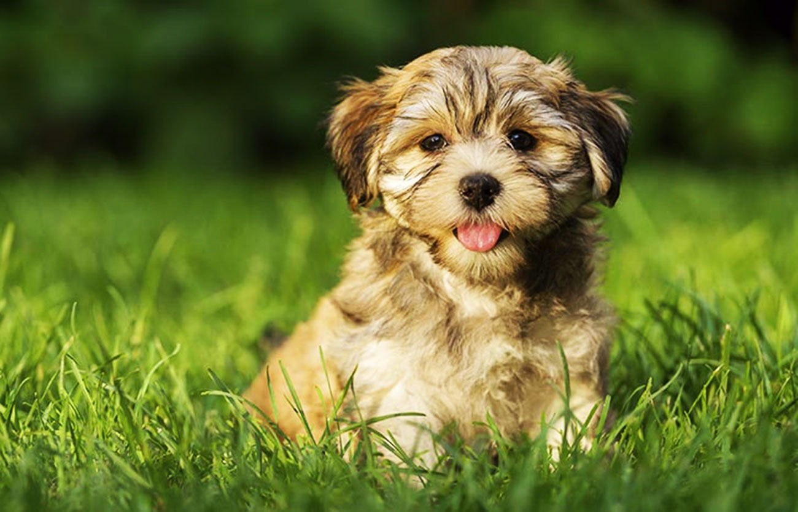

Todo sobre
el Bichon Habanero.
Inicio
Bienvenidos a nuestra página web dedicada al maravilloso y encantador Bichón Habanero, una de las razas de perros más adorables y afectuosas del mundo. Aquí, nos adentraremos en la rica historia, características distintivas, cuidados específicos y el entrañable carácter de esta raza. Ya seas un orgulloso propietario de un Bichón Habanero, un posible adoptante o simplemente un amante de los perros, esperamos brindarte toda la información necesaria y curiosidades fascinantes sobre estos pequeños compañeros.

Origen e Historia del Bichón Habanero
El Bichón Habanero, también conocido como Havanese en inglés, tiene una historia que se remonta a siglos atrás. Originario de la región mediterránea, esta raza pertenece a la familia de los Bichones, un grupo de perros pequeños y peludos conocidos por su naturaleza alegre y amigable. A lo largo de los siglos, el Bichón Habanero hizo su camino hacia Cuba, donde se estableció como una raza distintiva y se convirtió en el perro nacional del país.
Durante el siglo XVIII, los colonos españoles y franceses trajeron estos perros a Cuba. Allí, el Bichón Habanero se adaptó perfectamente al clima tropical y a la vida en la isla, desarrollando un pelaje único que lo protege del sol y del calor. Esta raza pronto se ganó el corazón de la aristocracia cubana, convirtiéndose en un símbolo de estatus y elegancia. Con el tiempo, su popularidad se extendió más allá de las fronteras de Cuba, llegando a ser muy apreciado en todo el mundo por su carácter encantador y apariencia adorable.
Caracteristicas De esta Raza
El Bichón Habanero es un perro de pequeño tamaño, generalmente pesando entre 3 y 6 kilogramos y alcanzando una altura de 23 a 27 centímetros a la cruz. Una de sus características más distintivas es su pelaje largo, sedoso y ondulado. Este pelaje puede venir en una amplia variedad de colores, incluyendo blanco, negro, chocolate, leonado, plata y combinaciones de estos.
BichonHabanero2.jpeg
A diferencia de muchos perros pequeños, el Bichón Habanero tiene una estructura robusta y bien proporcionada. Sus ojos oscuros y expresivos y sus orejas colgantes cubiertas de pelo largo le dan una apariencia dulce y alerta. Su cola, llevada alegremente sobre la espalda, es otra de las características que contribuyen a su aspecto juguetón y amistoso.
Temperamento y Personalidad del Bichón Habanero
Una de las razones por las que el Bichón Habanero es tan querido es su maravilloso temperamento. Estos perros son conocidos por ser extremadamente sociables y afectuosos. Les encanta estar en compañía de su familia humana y suelen llevarse bien con niños, otros perros y mascotas. Son perros muy inteligentes y ansiosos por complacer, lo que los hace relativamente fáciles de entrenar.
El Bichón Habanero es también conocido por su naturaleza juguetona y energética. Les encanta participar en juegos y actividades, por lo que son compañeros ideales para familias activas. Sin embargo, también saben cómo relajarse y disfrutar de un buen tiempo de descanso en el regazo de su dueño. Su adaptabilidad y amor por la interacción humana los convierten en perros de compañía excepcionales.